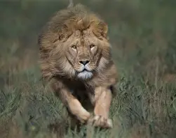
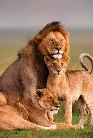
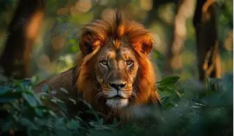
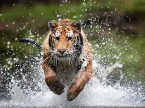
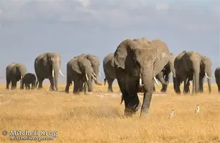
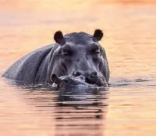
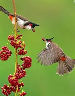

Kings of the Savanna
Lions represent the raw power and majestic grace of the African plains. These apex predators are not just symbols of strength; they are vital to the health of the ecosystem. Our extensive field work has allowed us to capture intimate family dynamics, dramatic hunts, and the quiet dignity of pride leaders in cinematic lighting.
View Gallery



Ghosts of the Jungle
The elusive Bengal tigers of India. Capturing these solitary predators requires infinite patience, a deep understanding of the dense forest terrain, and respect for their territory. This series highlights the dramatic contrast of their vibrant coats against the dark jungle foliage.
View Gallery



Gentle Giants
A tribute to the emotional depth and wisdom of African elephants. This collection focuses on highlighting their tight-knit family bonds, undeniable intelligence, and the tragic beauty of their struggle against poaching and habitat loss.
View Gallery



Masters of the Sky
From the lightning-fast stoop of a falcon to the colorful courtship displays of tropical birds. Freezing the action of avian subjects requires the absolute limit of camera technology and anticipation.
View Gallery


Into the Deep
Exploring the alien worlds beneath the waves. This collection focuses on the majestic movement of marine life in their silent blue realm, bringing awareness to fragile coral ecosystems.
View Gallery


The Micro World
The macro world holds wonders that often go unnoticed by the naked eye. Through specialized macro lenses, we bring to light the intricate textures, brilliant colors, and bizarre adaptations of insects and flora.
View Gallery


Monochrome Drama
Stripping away color forces the viewer to focus on light, shadow, texture, and emotion. The Black & White collection emphasizes the raw, timeless essence of wildlife.
View Gallery